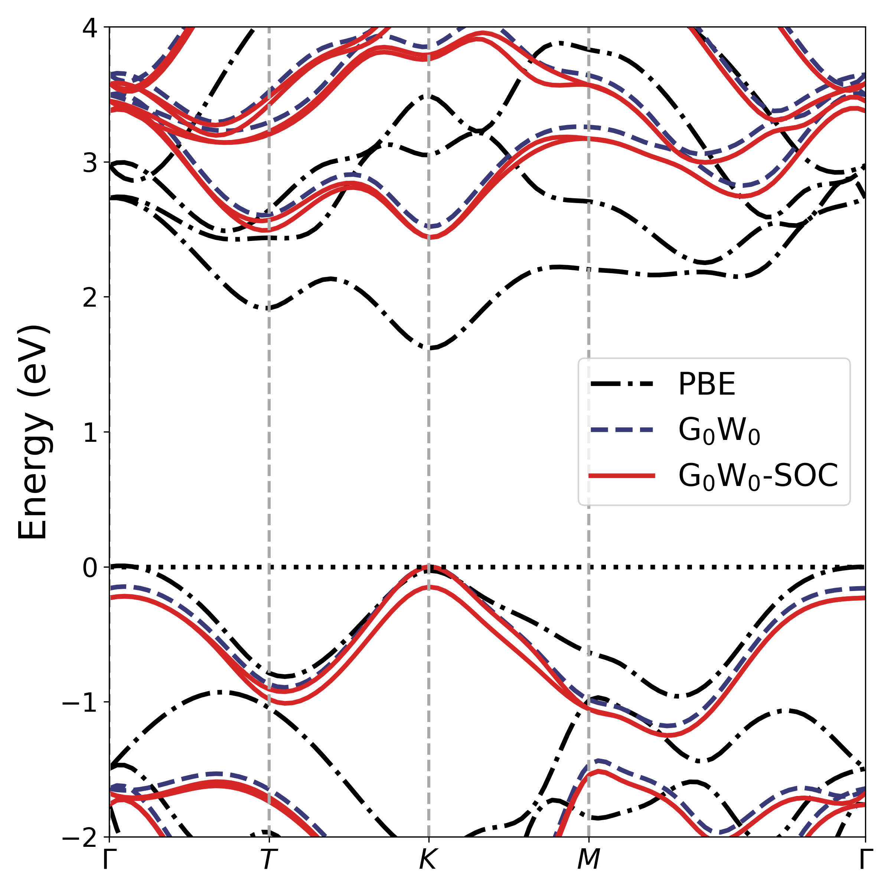

<!DOCTYPE HTML>
<html>
<head>
  <meta charset="utf-8">
  
  <title>GPAW学习笔记(四)——GW计算 | Shigaro</title>
  <meta name="author" content="minyez">
  
  <meta name="description" content="minyez&#39;s blog on life, science and programming">
  
  
  <meta name="viewport" content="width=device-width, initial-scale=1, maximum-scale=1">

  <meta property="og:title" content="GPAW学习笔记(四)——GW计算"/>
  <meta property="og:site_name" content="Shigaro"/>

  
    <meta property="og:image" content=""/>
  

  
    <link rel="alternative" href="/true" title="Shigaro" type="application/atom+xml">
  
  
    <link href="/assets/images/favicon/icon.png" rel="icon">
  
  
  <link rel="stylesheet" href="/css/bootstrap.min.css" media="screen" type="text/css">
  <link rel="stylesheet" href="/css/bootstrap.css" media="screen" type="text/css">
  <link rel="stylesheet" href="/css/font-awesome.css" media="screen" type="text/css">
  <link rel="stylesheet" href="/css/style.css" media="screen" type="text/css">
  <link rel="stylesheet" href="/css/responsive.css" media="screen" type="text/css">
  <link rel="stylesheet" href="/css/highlight.css" media="screen" type="text/css">
  <link rel="stylesheet" href="/css/google-fonts.css" media="screen" type="text/css">
  <!--[if lt IE 9]><script src="//html5shiv.googlecode.com/svn/trunk/html5.js"></script><![endif]-->

  <script src="/js/jquery-2.0.3.min.js"></script>

  <!-- analytics -->
  
<script>
  (function(i,s,o,g,r,a,m){i['GoogleAnalyticsObject']=r;i[r]=i[r]||function(){
  (i[r].q=i[r].q||[]).push(arguments)},i[r].l=1*new Date();a=s.createElement(o),
  m=s.getElementsByTagName(o)[0];a.async=1;a.src=g;m.parentNode.insertBefore(a,m)
  })(window,document,'script','//www.google-analytics.com/analytics.js','ga');
  ga('create', 'UA-111612868-1', 'auto');
  ga('send', 'pageview');
</script>


<script async src="//busuanzi.ibruce.info/busuanzi/2.3/busuanzi.pure.mini.js">
</script>


</head>

 <body 
>
  <nav id="main-nav" class="navbar navbar-default navbar-fixed-top" role="navigation">
    <div class="container">
      <button type="button" class="navbar-header navbar-toggle" data-toggle="collapse" data-target=".navbar-collapse">
		<span class="sr-only">Toggle navigation</span>
        <span class="icon-bar"></span>
        <span class="icon-bar"></span>
        <span class="icon-bar"></span>
      </button>
	  <a class="navbar-brand" href="/"></a>
      <div class="collapse navbar-collapse nav-menu">
		    <ul class="nav navbar-nav">
		      

          <!-- Categories -->
          
          <li>
            <a href="/" title="Shigaro's Home" style="font-weight: normal; font-family: Calibri,Arial; font-size: 18px">
              <i class="fa fa-bank"></i>Home
            </a>
          </li>
          
		      

          <!-- Categories -->
          
          <!-- Archives -->
          <li>
            <a href="/archives" title="All the articles." style="font-weight: normal; font-family: Calibri,Arial; font-size:     18px">
            <i class="fa fa-archive"></i>Archives
            </a>
          </li>

          
		      

          <!-- Categories -->
          
		      <li class="dropdown">
            <a href="/categories" class="dropdown-toggle" data-toggle="dropdown" title="All the categories." style="font-weight: normal; font-family: Calibri,Arial; font-size:     18px">
		    	  <i class="fa fa-folder"></i>Categories
            <b class="caret"></b>   
		    	  </a>
            <ul class="dropdown-menu">
              <li class="divider"></li>
              <li><a href="/categories" style="font-size: 20px; font-family: 'Calibri Light',Arial">All Categories</a><span></span></li>
              <li class="divider"></li>
              
              <li><a href="/categories/Software/" style="font-size: 15px; font-family: 微软雅黑">Software<span></span></a></li>
              
              <li><a href="/categories/Programming/" style="font-size: 15px; font-family: 微软雅黑">Programming<span></span></a></li>
              
              <li><a href="/categories/Algorithm/" style="font-size: 15px; font-family: 微软雅黑">Algorithm<span></span></a></li>
              
              <li><a href="/categories/Life/" style="font-size: 15px; font-family: 微软雅黑">Life<span></span></a></li>
              
              <li class="divider"></li>
            </ul>
		      </li>

          
		      

          <!-- Categories -->
          
          <!-- Tags -->
          <li class="dropdown">
            <a href="/tags" class="dropdown-toggle" data-toggle="dropdown" title="All the tags." style="font-weight: normal; font-family: Calibri,Arial; font-size:     18px">
            <i class="fa fa-tags"></i>Tags
            <b class="caret"></b>   
            </a>
            <ul class="dropdown-menu">
              <li class="divider"></li>
              <li><a href="/tags" style="font-size: 20px; font-family: 'Calibri Light',Arial">All Tags</a><span></span></li>
              <li class="divider"></li>
              
              <li><a href="/tags/Compilation/" style="font-size: 15px; font-family: 微软雅黑">Compilation<span></span></a></li>
              
              <li><a href="/tags/Bugfix/" style="font-size: 15px; font-family: 微软雅黑">Bugfix<span></span></a></li>
              
              <li><a href="/tags/WIEN2k/" style="font-size: 15px; font-family: 微软雅黑">WIEN2k<span></span></a></li>
              
              <li><a href="/tags/Intel/" style="font-size: 15px; font-family: 微软雅黑">Intel<span></span></a></li>
              
              <li><a href="/tags/GPAW/" style="font-size: 15px; font-family: 微软雅黑">GPAW<span></span></a></li>
              
              <li><a href="/tags/Hexo/" style="font-size: 15px; font-family: 微软雅黑">Hexo<span></span></a></li>
              
              <li><a href="/tags/Valgrind/" style="font-size: 15px; font-family: 微软雅黑">Valgrind<span></span></a></li>
              
              <li class="divider"></li>
            </ul>
          </li>
          
          
		      

          <!-- Categories -->
          
          <li>
            <a href="/about" title="About me." style="font-weight: normal; font-family: Calibri,Arial; font-size: 18px">
              <i class="fa fa-user"></i>About
            </a>
          </li>
          
		      
		    </ul>
      </div>
    </div> <!-- container -->
</nav>
<div class="clearfix"></div>

  <div class="container">
  	<div class="content">
    	 


	
		<div class="page-header">		
			<h1> GPAW学习笔记(四)——GW计算</h1>
		</div>		
	


<div class="row post">
	<!-- cols -->
	
	<div id="top_meta"></div>
	<div class="col-md-9">
	

	<!-- content -->
	<div class="mypage">		
	  		

	  <link rel="stylesheet" type="text/css" href="/css/hint.min.css"><h2 id="前言"><a href="#前言" class="headerlink" title="前言"></a>前言</h2><p>本文将简单介绍GPAW中的进行准粒子计算的<code>G0W0</code>类, 并使用<code>GWBands</code>类制作单层二硫化钼的能带结构图.<a id="more"></a></p>
<p>无论是否自洽, GW计算都需要一组单粒子态作为输入, 这组单粒子态中需要包含大量的非占据态. 目前主流是采用Kohn-Sham DFT产生的Kohn-Sham本征态. 这里主要介绍非自洽计算情形, 此时GW结果受到输入影响.</p>
<p>为了得到包含较多非占据态的本征态一般有两种方法. 第一种是在基态计算中包含大量的非占据态, 这种情况电子步迭代效率低. 第二种是首先在较少非占据态下得到收敛的电子密度(电子密度只与占据态有关), 然后在固定电子密度下对角化Kohn-Sham单电子Hamiltonian. 对于局域和半局域泛函, 当电子密度固定时, 久期行列式就完全确定了, 一步即可得到等于基组数量的非占据态. 对于非局域泛函, 也只需要几步以收敛非局域势算符.</p>
<p>这里用的例子是单层二硫化钼. 首先用ASE构造二硫化钼模型. 晶格常数相比实验上体相稳定结构略有拉伸.</p>
<figure class="highlight python"><table><tr><td class="gutter"><pre><span class="line">1</span><br><span class="line">2</span><br></pre></td><td class="code"><pre><span class="line"><span class="keyword">from</span> ase.build <span class="keyword">import</span> mx2</span><br><span class="line">mos2 = mx2(formula=<span class="string">'MoS2'</span>, kind=<span class="string">'2H'</span>, a=<span class="number">3.19</span>, thickness=<span class="number">3.127</span>, size=(<span class="number">1</span>, <span class="number">1</span>, <span class="number">1</span>), vacuum=<span class="number">5.0</span>)</span><br></pre></td></tr></table></figure>
<h2 id="基态计算与对角化"><a href="#基态计算与对角化" class="headerlink" title="基态计算与对角化"></a>基态计算与对角化</h2><p>关于基态和对角化计算已经在<a href="/2019/06/18/gpaw-2-scf-bs/" title="GPAW学习笔记(二)——DFT自洽场与能带计算">GPAW学习笔记(二)——DFT自洽场与能带计算</a>和<a href="/2019/06/19/gpaw-3-diag-gs/" title="GPAW学习笔记(三)——求解器对全哈密顿量对角化的影响">GPAW学习笔记(三)——求解器对全哈密顿量对角化的影响</a>中提及. 这里用了一个比较小的平面波截断以减小计算量. 而k值设的比较大. 若k太小, 后面用<code>GWBands</code>作能带插值时VBM和CBM位置会出错.</p>
<figure class="highlight python"><table><tr><td class="gutter"><pre><span class="line">1</span><br><span class="line">2</span><br><span class="line">3</span><br><span class="line">4</span><br><span class="line">5</span><br><span class="line">6</span><br><span class="line">7</span><br><span class="line">8</span><br><span class="line">9</span><br><span class="line">10</span><br><span class="line">11</span><br><span class="line">12</span><br><span class="line">13</span><br><span class="line">14</span><br><span class="line">15</span><br><span class="line">16</span><br></pre></td><td class="code"><pre><span class="line"><span class="keyword">from</span> gpaw <span class="keyword">import</span> GPAW, PW, FermiDirac</span><br><span class="line"></span><br><span class="line">Ecut = <span class="number">300</span></span><br><span class="line">kx = <span class="number">18</span></span><br><span class="line">calc = GPAW(mode=PW(Ecut), xc=<span class="string">'PBE'</span>,</span><br><span class="line">            convergence=&#123;<span class="string">"density"</span>: <span class="number">1e-8</span>&#125;,</span><br><span class="line">            kpts=&#123;<span class="string">'size'</span>: (kx, kx, <span class="number">1</span>), <span class="string">'gamma'</span>: <span class="keyword">True</span>&#125;,</span><br><span class="line">            occupations=FermiDirac(<span class="number">0.001</span>), parallel=&#123;<span class="string">'domain'</span>: <span class="number">1</span>&#125;,</span><br><span class="line">            txt=<span class="string">'gs.txt'</span>)</span><br><span class="line">mos2.set_calculator(calc)</span><br><span class="line"><span class="comment"># 基态SCF</span></span><br><span class="line">mos2.get_potential_energy()</span><br><span class="line">calc.write(<span class="string">'gs.gpw'</span>)</span><br><span class="line"><span class="comment"># 对角化哈密顿量, 将波函数和能量写入文件, 以供GW读取</span></span><br><span class="line">calc.diagonalize_full_hamiltonian()</span><br><span class="line">calc.write(<span class="string">'fulldiag.gpw'</span>, <span class="string">'all'</span>)</span><br></pre></td></tr></table></figure>
<h2 id="GW计算"><a href="#GW计算" class="headerlink" title="GW计算"></a>GW计算</h2><p>这里用包含4s4p的Mo PAW setup, 因此体系共有14+6+6=26个价电子, 在自旋非极化下有13个占据态, 因此价带顶的指标是12. 现在计算其前5个价带和导带.</p>
<figure class="highlight python"><table><tr><td class="gutter"><pre><span class="line">1</span><br><span class="line">2</span><br><span class="line">3</span><br><span class="line">4</span><br><span class="line">5</span><br><span class="line">6</span><br><span class="line">7</span><br><span class="line">8</span><br><span class="line">9</span><br><span class="line">10</span><br><span class="line">11</span><br></pre></td><td class="code"><pre><span class="line"><span class="keyword">from</span> gpaw.response.g0w0 <span class="keyword">import</span> G0W0</span><br><span class="line"></span><br><span class="line">diagfile = <span class="string">'fulldiag.gpw'</span></span><br><span class="line">ecut = <span class="number">50</span></span><br><span class="line"></span><br><span class="line">gw = G0W0(calc=diagfile, bands=(<span class="number">8</span>, <span class="number">18</span>), <span class="comment"># VB at index 12</span></span><br><span class="line">          method=<span class="string">"G0W0"</span>, ecut=<span class="number">50</span>, nblocksmax=<span class="keyword">True</span>,</span><br><span class="line">          truncation=<span class="string">'2D'</span>, q0_correction=<span class="keyword">True</span>,</span><br><span class="line">          domega0=<span class="number">0.03</span>, omega2=<span class="number">10</span>,</span><br><span class="line">          filename=<span class="string">'g0w0'</span>, savepckl=<span class="keyword">True</span>)</span><br><span class="line">gw.calculate()</span><br></pre></td></tr></table></figure>
<p>其中<code>nblocksmax</code>设为True时GPAW将最大化响应函数<code>chi0</code>的分块, 减小每个进程的内存消耗. 8进程测试的内存占用和GW总用时结果如下表, 开启<code>nblocksmax</code>后预测的单进程内存消耗减小, 但是计算消耗时间更长.</p>
<table>
<thead>
<tr>
<th style="text-align:left"><code>nlocksmax</code></th>
<th style="text-align:center">Estimate Mem. per proc. (MB)</th>
<th style="text-align:center">wall time (s)</th>
</tr>
</thead>
<tbody>
<tr>
<td style="text-align:left">True</td>
<td style="text-align:center">30</td>
<td style="text-align:center">1923</td>
</tr>
<tr>
<td style="text-align:left">False</td>
<td style="text-align:center">233</td>
<td style="text-align:center">1429</td>
</tr>
</tbody>
</table>
<p><code>truncation</code>和<code>q0_correction</code>是针对低维体系的参数, 前者加快对于真空层厚度的收敛, 后者则是加快对面内布里渊区采样格点的收敛. 具体可以参考文献1和3.</p>
<p>参数<code>domega0</code>和<code>omega2</code>与频率积分有关. <code>domega0</code>决定第一个频率点的位置, <code>omega2</code>决定在何处倍增格点间距. 一般来说带隙越小, <code>domega0</code>就要取得越小以对低频响应采样充分.  显然的, <code>domega0</code>越小, <code>omega2</code>越大, 频率格点数越多, 计算量越大. 目前这个设置可以使K点带隙收敛到2 meV以内.</p>
<h2 id="作能带图"><a href="#作能带图" class="headerlink" title="作能带图"></a>作能带图</h2><figure class="highlight python"><table><tr><td class="gutter"><pre><span class="line">1</span><br><span class="line">2</span><br><span class="line">3</span><br><span class="line">4</span><br><span class="line">5</span><br><span class="line">6</span><br><span class="line">7</span><br><span class="line">8</span><br><span class="line">9</span><br><span class="line">10</span><br><span class="line">11</span><br><span class="line">12</span><br><span class="line">13</span><br><span class="line">14</span><br><span class="line">15</span><br><span class="line">16</span><br><span class="line">17</span><br><span class="line">18</span><br><span class="line">19</span><br><span class="line">20</span><br><span class="line">21</span><br><span class="line">22</span><br><span class="line">23</span><br><span class="line">24</span><br><span class="line">25</span><br><span class="line">26</span><br><span class="line">27</span><br><span class="line">28</span><br><span class="line">29</span><br><span class="line">30</span><br><span class="line">31</span><br><span class="line">32</span><br><span class="line">33</span><br><span class="line">34</span><br><span class="line">35</span><br><span class="line">36</span><br><span class="line">37</span><br><span class="line">38</span><br><span class="line">39</span><br><span class="line">40</span><br><span class="line">41</span><br><span class="line">42</span><br><span class="line">43</span><br><span class="line">44</span><br><span class="line">45</span><br><span class="line">46</span><br><span class="line">47</span><br><span class="line">48</span><br><span class="line">49</span><br><span class="line">50</span><br><span class="line">51</span><br><span class="line">52</span><br><span class="line">53</span><br><span class="line">54</span><br><span class="line">55</span><br><span class="line">56</span><br><span class="line">57</span><br><span class="line">58</span><br></pre></td><td class="code"><pre><span class="line"><span class="keyword">import</span> pickle</span><br><span class="line"><span class="keyword">import</span> matplotlib.pyplot <span class="keyword">as</span> plt</span><br><span class="line"><span class="keyword">import</span> matplotlib <span class="keyword">as</span> mpl</span><br><span class="line"><span class="keyword">import</span> numpy <span class="keyword">as</span> np</span><br><span class="line"><span class="keyword">from</span> gpaw.response.gw_bands <span class="keyword">import</span> GWBands</span><br><span class="line"></span><br><span class="line">calcfile = <span class="string">'fulldiag.gpw'</span></span><br><span class="line">gwpckl = <span class="string">'g0w0_results.pckl'</span></span><br><span class="line"></span><br><span class="line"><span class="comment"># 设置K点路径</span></span><br><span class="line">K = np.array([<span class="number">1</span> / <span class="number">3</span>, <span class="number">1</span> / <span class="number">3</span>, <span class="number">0</span>])</span><br><span class="line">M = np.array([<span class="number">0.0</span>, <span class="number">0.5</span>, <span class="number">0</span>])</span><br><span class="line">G = np.array([<span class="number">0.0</span>, <span class="number">0.0</span>, <span class="number">0.0</span>])</span><br><span class="line">kpoints = np.array([G, K/<span class="number">2</span>, K, M, G])</span><br><span class="line"></span><br><span class="line"><span class="comment"># 初始化GWBands对象. bandrange要和G0W0设置一致, 不过这里第二个指标是要包含进去的</span></span><br><span class="line">GW = GWBands(calcfile=calcfile, gwpckl=gwpckl, kpoints=kpoints, bandrange=(<span class="number">8</span>,<span class="number">17</span>))</span><br><span class="line"><span class="comment"># 设置</span></span><br><span class="line">gwbopts=&#123;<span class="string">"nk_Int"</span>: <span class="number">100</span>, <span class="string">"interpolate"</span>: <span class="keyword">True</span>, <span class="string">"vac"</span>: <span class="keyword">False</span>&#125;</span><br><span class="line"><span class="comment"># 提取PBE, GW和GW-SOC能带插值数据</span></span><br><span class="line">pbe = GW.get_gw_bands(SO=<span class="keyword">False</span>, dft=<span class="keyword">True</span>, **gwbopts)</span><br><span class="line">gw = GW.get_gw_bands(SO=<span class="keyword">False</span>, **gwbopts)</span><br><span class="line">gwsoc = GW.get_gw_bands(SO=<span class="keyword">True</span>, **gwbopts)</span><br><span class="line"><span class="comment"># 提取K点路径的一维坐标</span></span><br><span class="line">x_x = gw[<span class="string">'x_k'</span>]</span><br><span class="line">X = gw[<span class="string">'X'</span>]/x_x[<span class="number">-1</span>]</span><br><span class="line">x_x /= x_x[<span class="number">-1</span>]</span><br><span class="line"><span class="comment"># 对齐VBM</span></span><br><span class="line">ePBE_kn, eGW_kn, eGWsoc_kn = [d[<span class="string">'e_kn'</span>] - d[<span class="string">'vbm'</span>] <span class="keyword">for</span> d <span class="keyword">in</span> [pbe, gw, gwsoc]]</span><br><span class="line"><span class="comment"># 作不同方法得到的能带</span></span><br><span class="line">fig, ax = plt.subplots(<span class="number">1</span>, <span class="number">1</span>, figsize=(<span class="number">8</span>, <span class="number">8</span>))</span><br><span class="line">styles = [</span><br><span class="line">          &#123;<span class="string">'ls'</span>: <span class="string">'-.'</span>, <span class="string">'marker'</span>: <span class="string">''</span>, <span class="string">'color'</span>: <span class="string">'k'</span>, <span class="string">"lw"</span>: <span class="number">3</span>&#125;,</span><br><span class="line">          &#123;<span class="string">'ls'</span>: <span class="string">'--'</span>, <span class="string">'marker'</span>: <span class="string">''</span>, <span class="string">'color'</span>: <span class="string">'#393b79'</span>, <span class="string">"lw"</span>: <span class="number">3</span>&#125;,</span><br><span class="line">          &#123;<span class="string">'ls'</span>: <span class="string">'-'</span>, <span class="string">'marker'</span>: <span class="string">''</span>, <span class="string">'color'</span>: <span class="string">'#d62728'</span>, <span class="string">"lw"</span>: <span class="number">3</span>&#125;,</span><br><span class="line">         ]</span><br><span class="line"><span class="keyword">for</span> i, bands <span class="keyword">in</span> enumerate([ePBE_kn, eGW_kn, eGWsoc_kn]):</span><br><span class="line">    ax.plot(x_x, bands, **styles[i])</span><br><span class="line"><span class="comment"># 能量零点</span></span><br><span class="line">ax.axhline(<span class="number">0.0</span>, color=<span class="string">'k'</span>, linestyle=<span class="string">':'</span>, lw=<span class="number">2</span>)</span><br><span class="line"><span class="comment"># 图例</span></span><br><span class="line">leg_handles = [mpl.lines.Line2D([], [], **style) <span class="keyword">for</span> style <span class="keyword">in</span> styles]</span><br><span class="line">leg_labels = [<span class="string">r'PBE'</span>, <span class="string">r'G$_0$W$_0$'</span>, <span class="string">r'G$_0$W$_0$-SOC'</span>]</span><br><span class="line">ax.legend(leg_handles, leg_labels, fontsize=<span class="number">20</span>)</span><br><span class="line"></span><br><span class="line">ax.set_xlim(<span class="number">0</span>, x_x[<span class="number">-1</span>])</span><br><span class="line">ax.set_ylim([<span class="number">-2</span>, <span class="number">4</span>])</span><br><span class="line">ax.set_ylabel(<span class="string">'Energy (eV)'</span>, fontsize=<span class="number">24</span>)</span><br><span class="line"><span class="comment"># 横坐标特殊k点, 并作分割线</span></span><br><span class="line"><span class="keyword">for</span> p <span class="keyword">in</span> X[:<span class="number">-1</span>]:</span><br><span class="line">    plt.axvline(p, color=<span class="string">'#AAAAAA'</span>, ls=<span class="string">'--'</span>, lw=<span class="number">2</span>)</span><br><span class="line">labels_K = [<span class="string">r'$\Gamma$'</span>, <span class="string">r'$T$'</span>, <span class="string">r'$K$'</span>, <span class="string">r'$M$'</span>, <span class="string">r'$\Gamma$'</span>]</span><br><span class="line">plt.xticks(X, labels_K, fontsize=<span class="number">18</span>)</span><br><span class="line"></span><br><span class="line">plt.yticks(fontsize=<span class="number">17</span>)</span><br><span class="line">fig.tight_layout()</span><br><span class="line">plt.savefig(<span class="string">'MoS2_band_GTKMG.png'</span>, dpi=<span class="number">300</span>)</span><br><span class="line">plt.show()</span><br></pre></td></tr></table></figure>
<p>效果如下图. 可以很容易看到, 在不包含SOC情况下, PBE预测单层MoS2具有$\Gamma-K$的间接带隙, 而GW给出的是K上的直接带隙. 包含SOC会导致K点能带裂分, 在GW下进一步增大$\Gamma$点和K点VBM的能差.</p>
<p><figure class="null"><figcaption>PBE, GW方法得到的MoS2能带</figcaption></figure></p>
<p>另外值得注意的一点是CB在$\Gamma-K$上也有一个能量较低的态(在T=0.5K附近). 在DFT下$T_c$与$K_c$能量差肉眼可见, 而在GW尤其是包含SOC下, 这两个态基本是简并的. 考虑到对未占据态的自能修正为正值, 这说明$K_c$的自能修正要大于$T_c$. 定性分析上, $T_c$主要是Mo的$d_{x^2-y^2}$和$d_{xy}$在面内成键, 而$K_c$是Mo的$d_{z^2}$.(文献2) 后者较为定域, 从GW修正DFT离域误差的角度可定性理解.</p>
<h2 id="参考资料"><a href="#参考资料" class="headerlink" title="参考资料"></a>参考资料</h2><ol>
<li>Ismail-Beigi, S. <em>Phys. Rev. B</em> <strong>73</strong>, 233103 (2006)</li>
<li>Zhang, L.; Zunger, A. <em>Nano Lett.</em> <strong>15</strong>, 949-957 (2015)</li>
<li>Rasmussen, F. et al. <em>Phys. Rev. B</em> <strong>94</strong>, 155406 (2016)</li>
<li><a href="https://wiki.fysik.dtu.dk/gpaw/tutorials/gw_tutorial/gw_tutorial.html#quasi-particle-spectrum-of-two-dimensional-materials" target="_blank" rel="noopener">Quasi-particle spectrum of two-dimensional materials - GPAW tutorial</a></li>
</ol>
	  
	</div>

    
	<div>
  	<center>
	<div class="pagination">
<ul class="pagination">
	 
				
    	<li class="prev"><a href="/2019/07/05/valgrind-2/" class="alignleft prev"><i class="fa fa-arrow-circle-o-left"></i>Prev</a></li>
  		

        <li><a href="/archives"><i class="fa fa-archive"></i>Archive</a></li>

		
		   <li class="next"><a href="/2019/06/19/gpaw-3-diag-gs/" class="alignright next">Next<i class="fa fa-arrow-circle-o-right"></i></a></li>         
        
	
</ul>
</div>

    </center>
	</div>
    
	
    <!-- bdshare -->
    
        

        

    

	<!-- comment -->
    
<section id="comment">
  <h2 class="title">Comments</h2>

  
<div id="disqus_thread"></div>
<script>
/**
*  RECOMMENDED CONFIGURATION VARIABLES: EDIT AND UNCOMMENT THE SECTION BELOW TO INSERT DYNAMIC VALUES FROM YOUR PLATFORM OR CMS.
*  LEARN WHY DEFINING THESE VARIABLES IS IMPORTANT: https://disqus.com/admin/universalcode/#configuration-variables*/
/*
var disqus_config = function () {
this.page.url = PAGE_URL;  // Replace PAGE_URL with your page's canonical URL variable
this.page.identifier = PAGE_IDENTIFIER; // Replace PAGE_IDENTIFIER with your page's unique identifier variable
};
*/
(function() { // DON'T EDIT BELOW THIS LINE
var d = document, s = d.createElement('script');
s.src = 'https://shigaro.disqus.com/embed.js';
s.setAttribute('data-timestamp', +new Date());
(d.head || d.body).appendChild(s);
})();
</script>
<noscript>Please enable JavaScript to view the <a href="https://disqus.com/?ref_noscript">comments powered by Disqus.</a></noscript>
  
</section>


	</div> <!-- col-md-9/col-md-12 -->
		
	
	<div id="side_meta">
		<div class="col-md-3" id="post_meta"> 

	<!-- date -->
	
	<div class="meta-widget">
	<i class="fa fa-clock-o"></i>
	2019-06-28 
	</div>
	

	<!-- page view by busuanzi -->
	

	<!-- post word count -->
	
	<div class="meta-widget">
	<i class="fa fa-tachometer"></i>
	<span class="post-count">1.5k</span> words
	</div>
	

	<!-- categories -->
    
	<div class="meta-widget">
	<a data-toggle="collapse" data-target="#categorys"><i class="fa fa-folder"></i></a>	
    <ul id="categorys" class="tag_box list-unstyled collapse in">
          
  <li>
    <li><a href="/categories/Software/">Software<span class="badge">16</span></a></li>
  </li>

    </ul>
	</div>
	

	<!-- tags -->
	
	<div class="meta-widget">
	<a data-toggle="collapse" data-target="#tags"><i class="fa fa-tags"></i></a>		  
    <ul id="tags" class="tag_box list-unstyled collapse in">	  
	    
  <li><a href="/tags/GPAW/">GPAW<span class="badge">4</span></a></li> <li><a href="/tags/GW/">GW<span class="badge">1</span></a></li>

    </ul>
	</div>
		

	<!-- toc -->
	<div class="meta-widget">
	
	   <a data-toggle="collapse" data-target="#toc"><i class="fa fa-bars"></i></a>
	   <div id="toc" class="toc collapse in">
			<ol class="toc-article"><li class="toc-article-item toc-article-level-2"><a class="toc-article-link" href="#前言"><span class="toc-article-text">前言</span></a></li><li class="toc-article-item toc-article-level-2"><a class="toc-article-link" href="#基态计算与对角化"><span class="toc-article-text">基态计算与对角化</span></a></li><li class="toc-article-item toc-article-level-2"><a class="toc-article-link" href="#GW计算"><span class="toc-article-text">GW计算</span></a></li><li class="toc-article-item toc-article-level-2"><a class="toc-article-link" href="#作能带图"><span class="toc-article-text">作能带图</span></a></li><li class="toc-article-item toc-article-level-2"><a class="toc-article-link" href="#参考资料"><span class="toc-article-text">参考资料</span></a></li></ol>
		</div>
	
	</div>
	
    <hr>
	
</div><!-- col-md-3 -->

	</div>
		

</div><!-- row -->

<script type="text/javascript">
var disqus_shortname = 'shigaro';
(function(){
  var dsq = document.createElement('script');
  dsq.type = 'text/javascript';
  dsq.async = true;
  dsq.src = '//' + disqus_shortname + '.disqus.com/embed.js';
  (document.getElementsByTagName('head')[0] || document.getElementsByTagName('body')[0]).appendChild(dsq);
}());
</script>


	</div>
  </div>
  <div class="container-narrow">
  <footer> <p>
  
  &copy; 2019 by <a href="https://github.com/minyez"> minyez </a>
  
    | <a href="http://github.com/minyez/hexo-theme-freemind/">Theme</a> based on two Freemind themes by <a href="https://github.com/wzpan/hexo-theme-freemind/">wzpan</a> and <a href="https://github.com/PytLab/hexo-theme-freemind/">PytLab</a> 
    | Powered by <a href="https://github.com/hexojs/hexo">Hexo</a>
  
    <span id="busuanzi_container_site_uv">| <span id="busuanzi_value_site_uv"></span> visitors</span>
  
  
	| <span class="post-count">39.5k</span> words
  
</p>
 </footer>
</div> <!-- container-narrow -->
  


  
<a id="gotop" href="#">   
  <span>▲</span> 
</a>

<script src="/js/jquery.imagesloaded.min.js"></script>
<script src="/js/gallery.js"></script>
<script src="/js/bootstrap.min.js"></script>
<script src="/js/main.js"></script>
<script src="/js/search.js"></script> 


<link rel="stylesheet" href="/fancybox/jquery.fancybox.css" media="screen" type="text/css">
<script src="/fancybox/jquery.fancybox.pack.js"></script>
<script type="text/javascript">
(function($){
  $('.fancybox').fancybox();
})(jQuery);
</script>


   <script type="text/javascript">      
     var search_path = "search.xml";
	 if (search_path.length == 0) {
	 	search_path = "search.xml";
	 }
	 var path = "/" + search_path;
     searchFunc(path, 'local-search-input', 'local-search-result');
   </script>


<!-- Global site tag (gtag.js) - Google Analytics -->
<!--    added 2018-07-12 -->
<!-- modified 2019-05-10 -->

<script async src="https://www.googletagmanager.com/gtag/js?id=UA-111612868-1"></script>
<script>
  window.dataLayer = window.dataLayer || [];
  function gtag(){dataLayer.push(arguments);}
  gtag('js', new Date());

  gtag('config', 'UA-111612868-1');
</script>


<script type="text/x-mathjax-config">
    MathJax.Hub.Config({
        tex2jax: {
            inlineMath: [ ["$","$"], ["\\(","\\)"] ],
            skipTags: ['script', 'noscript', 'style', 'textarea', 'pre', 'code'],
            processEscapes: true
        },
        TeX: {equationNumbers: { autoNumber: "AMS" }}
    });
    MathJax.Hub.Queue(function() {
        var all = MathJax.Hub.getAllJax();
        for (var i = 0; i < all.length; ++i)
            all[i].SourceElement().parentNode.className += ' has-jax';
    });
</script>
<!--<script src="http://cdn.mathjax.org/mathjax/latest/MathJax.js?config=TeX-AMS-MML_HTMLorMML"></script>-->
<script type="text/javascript" async src="https://cdnjs.cloudflare.com/ajax/libs/mathjax/2.7.1/MathJax.js?config=TeX-AMS-MML_HTMLorMML"></script>

</body>
   </html>
